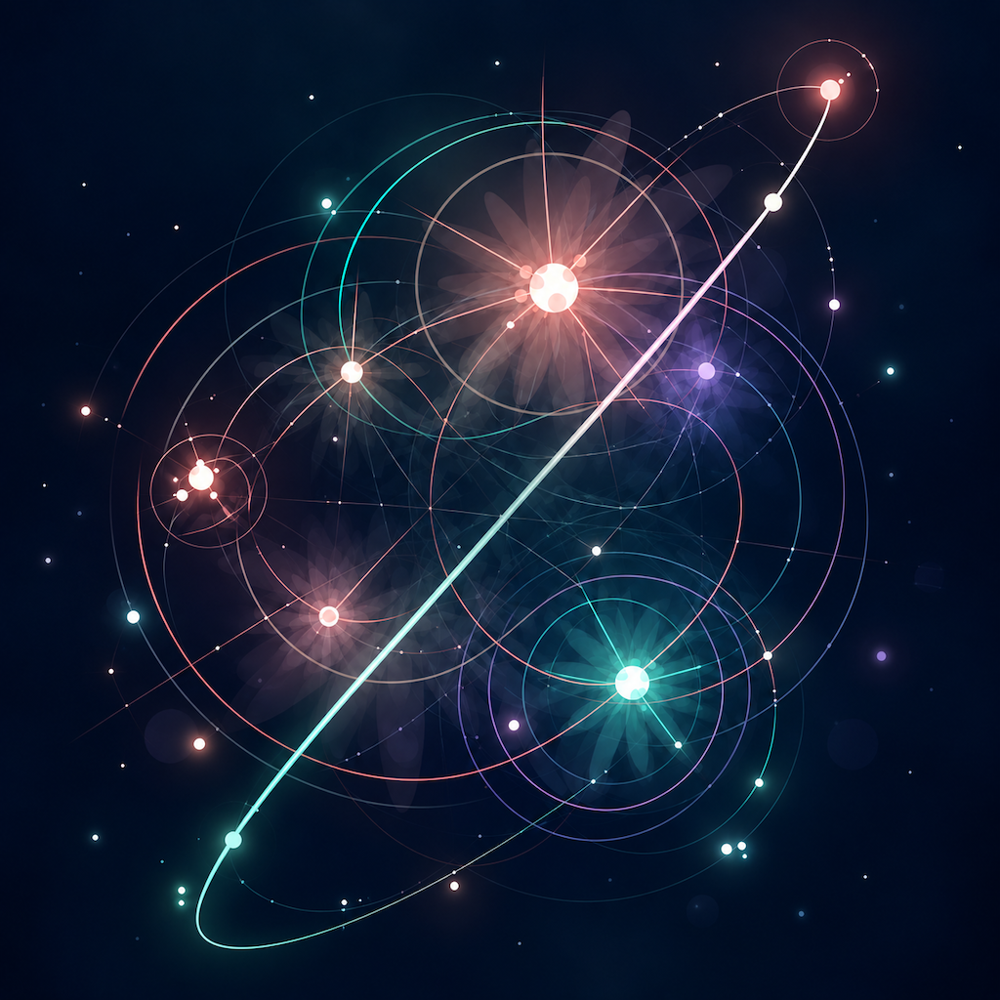

01
CONNECT
Trace a path through the stars.
Build a chain with a single continuous gesture. The path you draw becomes part of the moment that follows.
A visual game of connection and discovery.
星をつなぎ、空を咲かせる。
Draw a path through the stars. Each chain can bloom into light and reveal something new across the sky.
HOSHITSUNAGI v1.0 is being prepared for iPhone and iOS first.

THE FLOW
The core of HOSHITSUNAGI is simple: connect, watch what blooms, and discover what appears.
CONNECT
Build a chain with a single continuous gesture. The path you draw becomes part of the moment that follows.
BLOOM
Color, rings, particles, flowers, fireworks, and other game-native effects can unfold from the connection.
DISCOVER
Some moments become SPECIAL discoveries, turning each play into more than a score chase.
SPECIAL
HOSHITSUNAGI includes SPECIAL discoveries that can appear through play. Found moments are kept in the SPECIAL ALBUM so the sky gradually becomes a collection of things you have seen.
REPLAY
Play History and Favorite Replay make it possible to revisit memorable runs and discoveries instead of letting them disappear when a round ends.